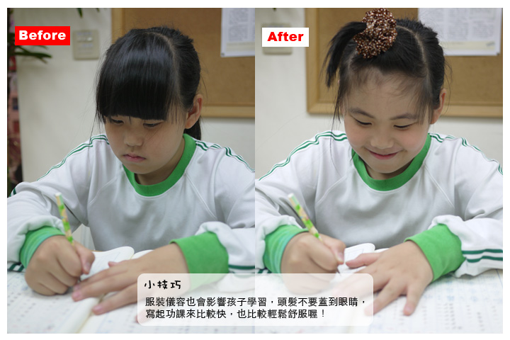
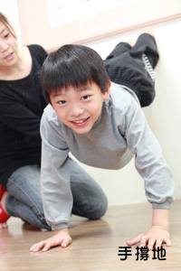
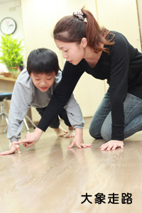
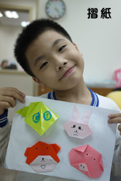
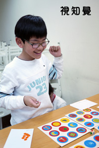
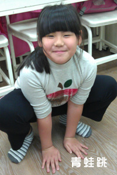
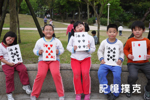
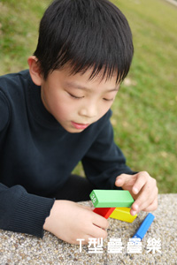
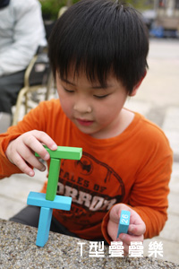

首頁
關於我們
教育理念
校園介紹
師資陣容
招生訊息
招生訊息
入學FAQ
收退費辦法
教學課程
生活實踐班
專注力訓練
家長專區
接送辦法
聯絡我們
申請入學
活動相簿區
專注力訓練
Concentration training

孩子寫功課的時候是否常趴著、坐姿不良？是否習慣用手撐頭？
當孩子久坐或維持固定姿勢太久，會容易感到疲勞。若只是單純糾正孩子的姿勢，對於學習的改善並不顯著，因為主要原因在於孩子的肌肉及關節的能力不足。

初級反射訓練
初級反射訓練是一種藉由四肢伸展及抬頭的方式，進而幫助腦幹成熟度更完整的運動。簡單來說，持續進行初級反射訓練可以提高孩子專注力、靈敏度及肌肉強度，讓孩子在學習可以更專注、更有效率。
[手撐地]、[鴨子走路]及[大象走路]的訓練在強化肌肉的拮抗、提高關節的支撐力。若持續進行，孩子就不會容易感到疲勞，進而提高學習效果。
孩子在寫功課或答題的時候是否常常看錯題目？
會有這種困擾的孩子，一方面是專注力的問題，另一方面也許是視知覺能力不足。透過某些遊戲的設計，可以增加孩子的視知覺，讓孩子不再輕易的看錯題目。

視知覺訓練
(一)摺紙可以練習手指精細度和圖像推理能力。能夠將圖看懂是摺紙的第一步驟，其中運用到的視覺空間能力及形狀區辨都會讓小朋友在遇到數學圖解的題目上更加得心應手！
(二)搜尋及區辨能力是小一必備的語文基礎能力，我們藉由遊戲增加視知覺練習，加上邏輯推理遊戲讓學生在活動中增加思考力。
經過適當的練習，可以讓孩子學會仔細閱讀題目跟圖形，而且效果非常良好！
孩子常常寫功課容易疲倦或恍神嗎？
孩子的大腦警醒度太低比較容易會發生這樣的狀況，當有這種情形出現時，建議可以讓孩子多做一些刺激前庭的活動。

前庭刺激活動
前庭主要掌管跟重力或加速有關的平衡感，前庭功能不足的孩子，通常喜歡大量前庭刺激的遊樂設施，像雲霄飛車、海盜船、盪鞦韆等。而前庭功能敏感的孩子對於高低快慢的急速改變會有較強的反應，所以反而害怕雲霄飛車類的遊戲。青蛙跳、翻跟斗這類的運動，對於提升大腦警醒度有很好的效果。一方面是因為運動有助於血液循環，可以讓大腦的思緒更清楚，另一方面是這類的運動會伴隨重力方向及位置的改變，可以刺激前庭功能。
孩子常常忘東忘西,背書常常要花很多時間嗎？
背書通常較枯燥乏味，但是記憶是學習的基礎，舉凡國語的注音符號、詞語解釋、數學的九九乘法、英文的單字，都需要記憶背誦，先有記憶，才能進行邏輯推理。專注力不夠的孩子，對於背誦花費的時間通常較久，而對於重複性的行為也較容易感到不耐煩。

大腦邊緣系統訓練
海馬迴對於記憶影響很大，無論是短期到長期記憶，以及其他各式各樣的記憶，都有關聯。最相關的就是敘述記憶，也就是需要用文字敘述和時間、地點、人物相關的事實記憶；與之相對的，就是程序記憶，譬如說騎腳踏車、美術創作、打球運動這種比較不是用文字來敘述的記憶。當資訊進入海馬迴之後，會不斷地回饋，回饋過程中，會將錯誤的資訊捨棄，正確的資訊強化，最後形成穩固的事件記憶，故11年以內的記憶需要海馬迴才能穩定下來。我們可以透過遊戲訓練大腦邊緣系統(海馬迴)，讓孩子利用回饋過程，將錯誤的資訊捨棄，正確的資訊強化，達到短期及長期記憶的能力強化。
擔心孩子抗壓性不夠嗎？
孩子為了獎勵或稱讚，都希望能夠在每一次的競賽中獲勝，不論是運動或是考試，即便只是遊戲，那是增加自信跟安全感的一種方式。但是部分的孩子無法承受"輸"這個結果，原因有可能過往的經驗之中，"輸"這個結果伴隨著家長或老師的責備，甚至是同學的嘲笑。抗壓性高的孩子能漸漸從傳統的責備或壓力下克服負面情緒，抗壓性低的孩子則較易產生情緒上的變化。

T型疊疊樂
此遊戲能夠增加手指穩定度，幫助孩子訓練手部肌肉，有助於字體的修正；也可以在不斷的嘗試失敗及自我修正錯誤中，觀察孩子的受挫力高低。